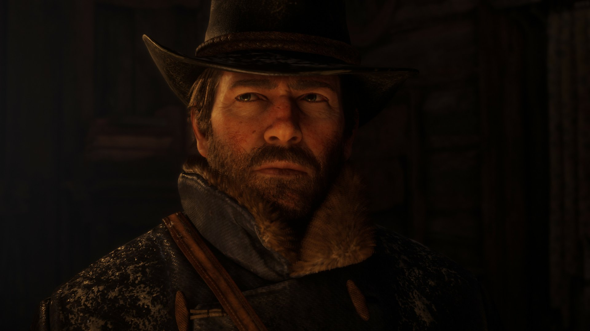
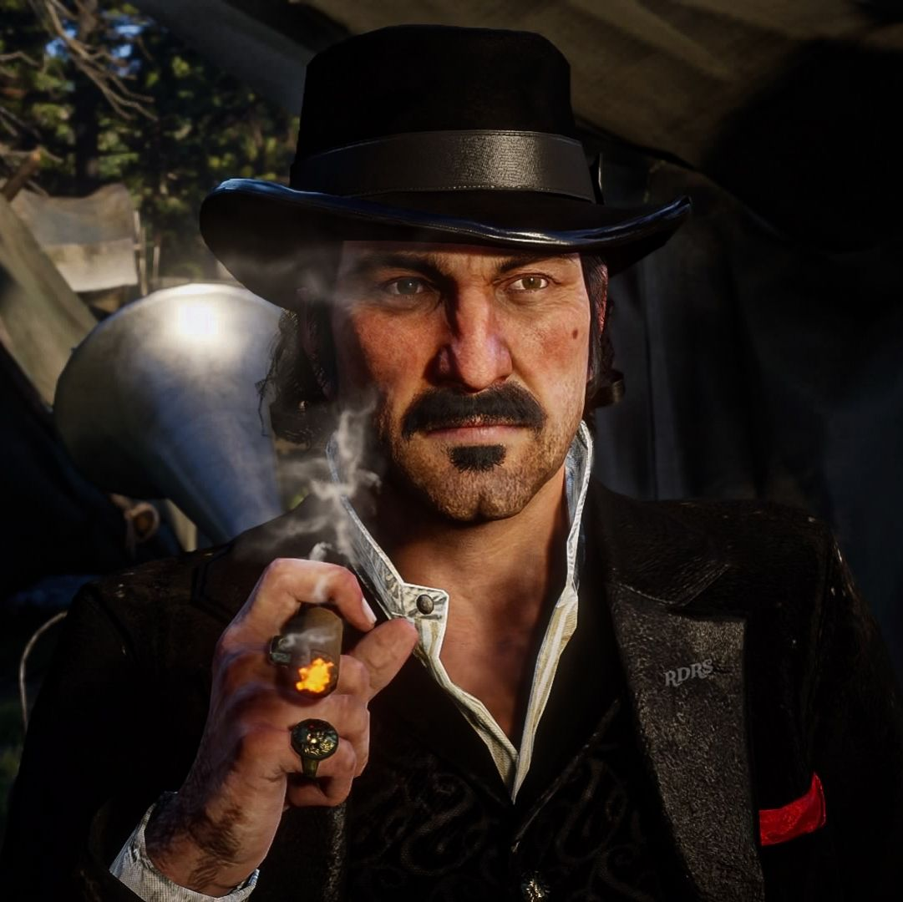
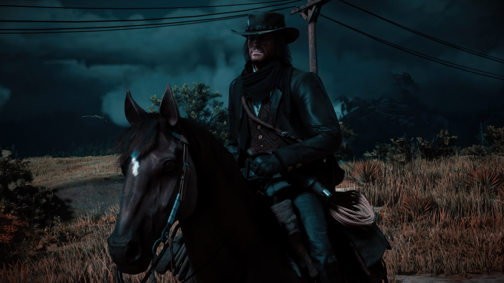
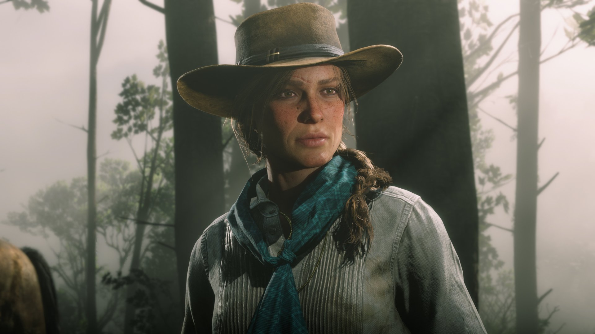

Arthur Morgan
El protagonista. Un forajido leal a la banda de Dutch.

El protagonista. Un forajido leal a la banda de Dutch.

El carismático líder de la banda.

Miembro de la banda y protagonista del primer RDR.

Una viuda que se une a la banda y se vuelve letal.